Intro to
Progressive Web Apps
What are Progressive Web Apps?
Progressive Web Apps are:
“A Progressive Web App uses modern web capabilities to deliver an app-like user experience.”
Progressive Web Apps are:
- Progressive
- Responsive
- Connectivity independent
- App-like
- Fresh
- Safe
- Discoverable
- Re-engageable
- Installable
- Linkable
Progressive Web Apps are:
Combination of Web APIs, technologies and design concepts which create native app experience in a mobile browser. PWAs are deployed to servers, can be accessed through URLs and get indexed by search engines.
Progressive Web Apps are:
- index.html
- manifest.json
- sevice-worker.js
- CacheStorage
- BackgroundSync
- WebPush
...and all other HTML5 APIs
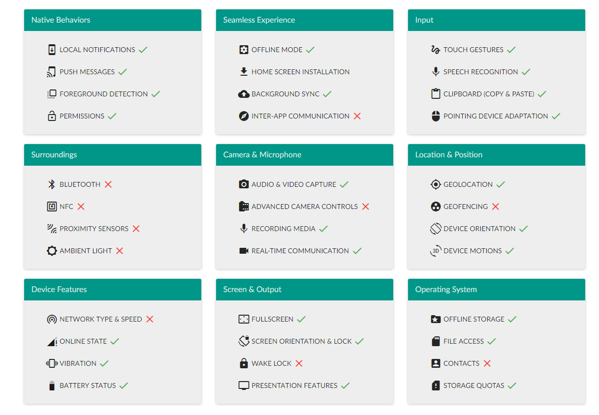Progressive Web Apps are:
For users
Mobile
Desktop
What they are not?
- They are not native apps replacements
- They are not a solution for not optimized websites
Why should I care?
- Provide faster web experience
- Work offline and on flaky connections
- Are cheap to implement
- Advertise your native app
- Testing ground before native implementation
- Another thread to play with
How to start?
Demo app
① Check your website
Demo lighthouse
Demo lighthouse results
- error: App can load on offline/flaky connections
- error: Network connection is secure
- error: User can be prompted to Add to Homescreen
- error: Installed web app will launch with custom splash screen
- error: Address bar matches brand colors
② Create manifest
manifest.json
{
"name": "Home tasks",
"short_name": "Tasks",
"icons": [
{
"src": "/images/icons/install-144x144.png",
"sizes": "144x144",
"type": "image/png"
},
{
"src": "/images/icons/android-chrome-192x192.png",
"sizes": "192x192",
"type": "image/png"
},
{
"src": "/images/icons/android-chrome-512x512.png",
"sizes": "512x512",
"type": "image/png"
}
],
"start_url": "./",
"scope": "/",
"display": "standalone",
"orientation": "portrait",
"background_color": "#29b6f6",
"theme_color": "#29b6f6"
}
head section
(...)
(...)
③ Create icons
- Real favicon generator
- 144x144 PNG is required
④ Create & register service worker
if ('serviceWorker' in navigator) {
navigator
.serviceWorker
.register('/service-worker.js')
.then((registration) => {
console.log("service worker registered", registration);
})
.catch((error) => {
console.error("#Service Worker registration error: ", error);
});
}
⑤ Inspect manifest
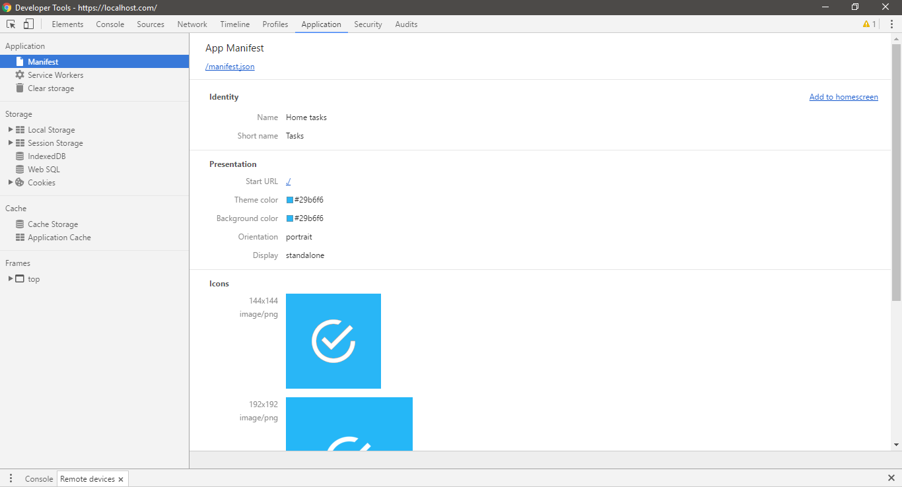Demo: chrome
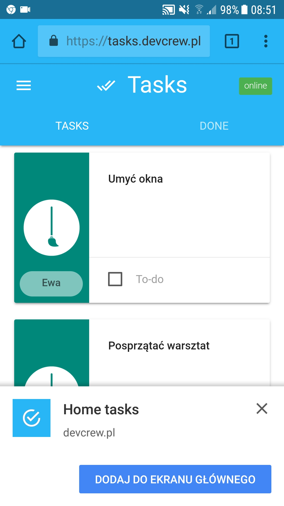
Demo: opera
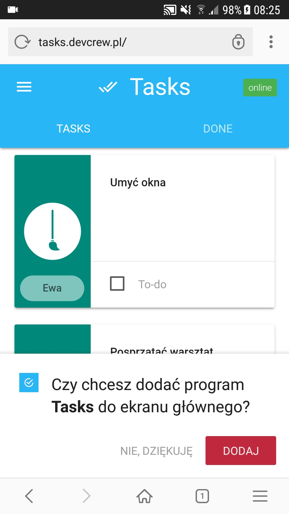
Demo: firefox
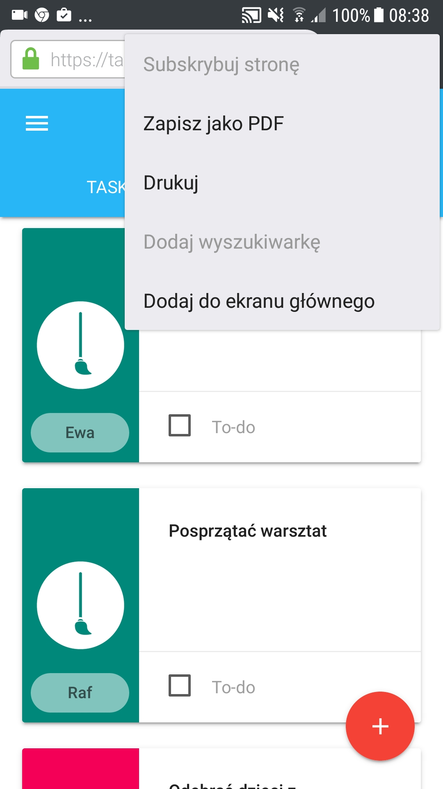
Demo: safari
Demo: safari
Demo: chrome windows
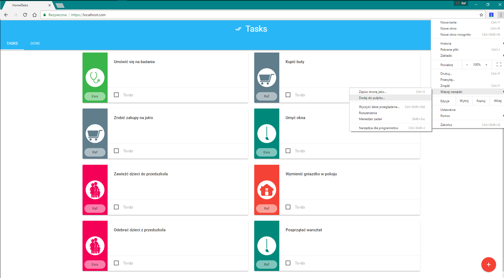App improvements:
- Load time
- Cache app shell resources
- Cache dynamic resources
-
Offline mode
- Cache api responses
- Intercept update requests
- Background sync
- Local notifications
App architecture:
Standard
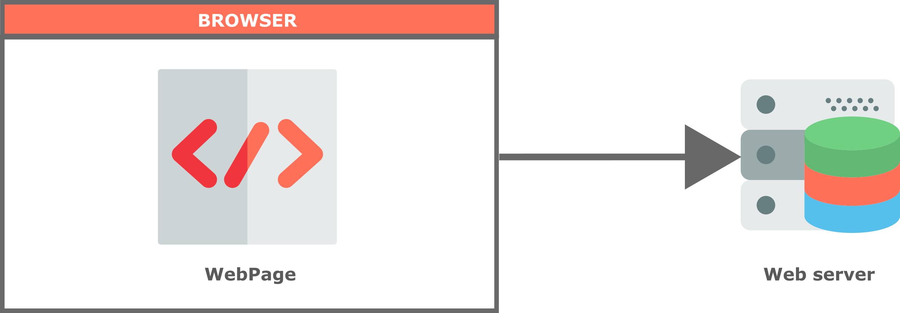ServiceWorker
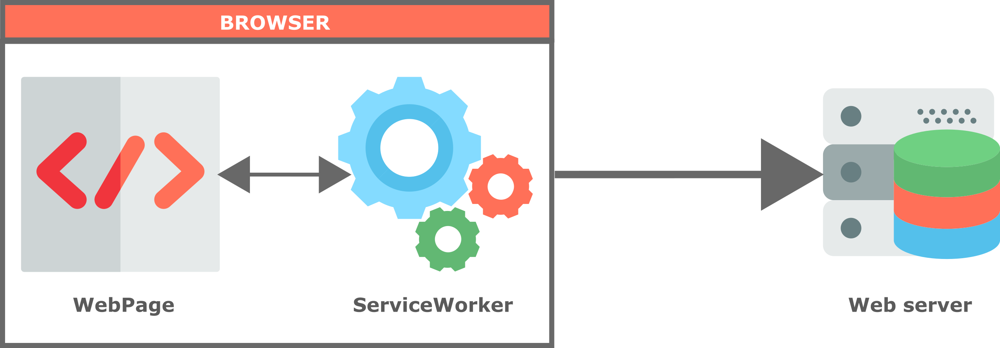ServiceWorker no connection
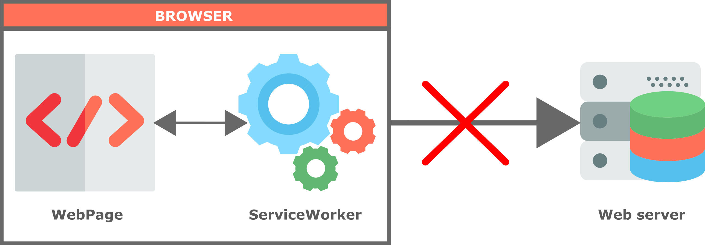ServiceWorker not supported
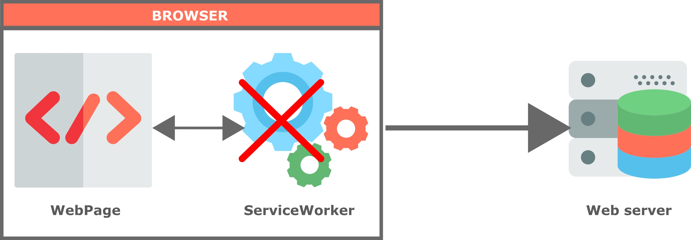Required Web APIs
Service worker
A service worker is a script that stands between your website and the network, giving you, among other things, the ability to intercept network requests and respond to them in different ways.
Service worker
- Separate thread
- Separate context
- Single service worker per scope
- Lifecycle: download, install, activate
- Events: install, activate, fetch, message, push, sync
Service worker: tooling
- Chrome: chrome://inspect/#service-workers
- Opera: opera://inspect/#service-workers
- Firefox: about:debugging#workers
Cache API
// cache files
caches
.open(shellCacheName)
.then((cache) => {
return cache.addAll(files);
});
// cache requests responses
cache.put(request, response);
// retrieve
caches
.match(event.request, {
ignoreSearch: hasQuery,
ignoreMethod: true,
ignoreVary: true
})
.then((cacheMatch) => {
return cacheMatch;
})
// delete
caches.delete(key);
Fetch API
// fetching
var promise = fetch(request)
.then((response) => {
var responseClone = response.clone();
// do something with resposne
return responseClone;
})
// create request manually
var promise = fetch('/api/tasks/' + task.id, {
method: 'PUT',
mode: 'cors',
redirect: 'follow',
headers: new Headers({
'Content-Type': 'application/json'
}),
body: JSON.stringify(task)
});
// create response manually
var blob = new Blob([jsonString], {
type: "application/json"
});
var response = new Response(blob, {
"status": 200
});
indexedDb & localforage
localforage.getItem(id)
localforage.setItem(id, object)
localforage.keys()
localforage.removeItem(.id)
Precache app-shell files
Files to cache
/* cache-keys.json */
[
"/",
"/manifest.json",
"/done",
"/site.css",
"/site.js",
"/systemjs.config.js",
"/app/main.js",
"/app/app.module.js",
"/app/app.routing.js",
"/app/app.component.html",
"/app/app.component.js",
"/app/done/done.component.html",
"/app/done/done.component.css",
"/app/done/done.component.js",
"/app/todo/todo.component.html",
"/app/todo/todo.component.css",
"/app/todo/todo.component.js",
"/app/shared/model.js",
"/app/shared/categories.service.js",
"/app/shared/tasks.service.js",
"/app/shared/users.service.js",
/* *** */
"https://fonts.googleapis.com/icon?family=Material+Icons",
"https://fonts.googleapis.com/css?family=Roboto:400,300,100"
]
Install event
/* service-wroker.js*/
var shellCacheName = 'app-shell-cache-v1.0';
self.addEventListener("install", (event) => {
console.log('[ServiceWorker] Install');
var installPromise = caches
.open(shellCacheName)
.then((cache) => {
return fetch('/sw/cache-keys.json')
.then((response) => {
return response.json();
}).then((files) => {
console.log('[[ServiceWorker]] install: ', files);
return cache.addAll(files);
});
});
event.waitUntil(installPromise);
});
Activate event
/* service-wroker.js*/
self.addEventListener("activate", (event) => {
console.log('[ServiceWorker] Activate');
var activatePromise = caches
.keys()
.then((keyList) => {
return Promise.all(keyList.map((key) => {
if (key !== shellCacheName) {
console.log('[ServiceWorker] Removing old cache', key);
return caches.delete(key);
}
}));
});
event.waitUntil(activatePromise);
});
Fetch from cache
self.addEventListener('fetch', (event) => {
var responsePromise = readFromCacheOrFetch(event);
event.respondWith(responsePromise);
});
function readFromCacheOrFetch(event) {
var hasQuery = event.request.url.indexOf('?') !== -1;
return caches
.match(event.request, {
ignoreSearch: hasQuery,
ignoreMethod: true,
ignoreVary: true
})
.then((cacheMatch) => {
if (cacheMatch) {
return cacheMatch;
} else {
return fetch(event.request);
}
});
}
Cache google fonts
self.addEventListener('fetch', (event) => {
var responsePromise = null;
if (/fonts.gstatic.com/.test(event.request.url)) {
responsePromise = cacheFonts(event);
} else {
responsePromise = readFromCacheOrFetch(event);
}
event.respondWith(responsePromise);
});
var cacheFonts = function (event) {
var hasQuery = event.request.url.indexOf('?') !== -1;
var cachePromise = caches
.open(fontCacheName)
.then((cache) => {
var responsePromise = cache.match(event.request, {
ignoreSearch: hasQuery,
ignoreMethod: true,
ignoreVary: true
})
.then((cacheMatch) => {
if (cacheMatch) {
return cacheMatch;
} else {
var fetchPromise = fetch(event.request)
.then((response) => {
cache.put(event.request.url, response.clone());
return response.clone();
});
return fetchPromise;
}
});
return responsePromise;
});
return cachePromise;
}
Tools: Cache storage
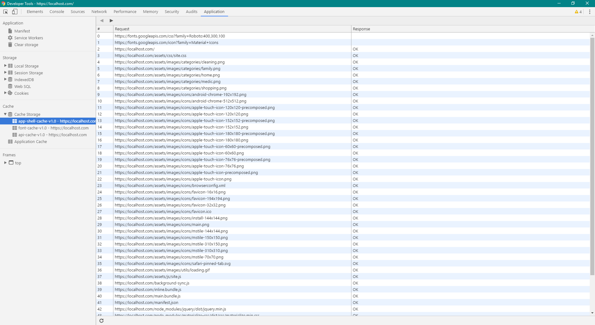Tools: Network

Offline mode
Cache api responses
self.addEventListener('fetch', (event) => {
var responsePromise = null;
if (/api\/categories/.test(event.request.url) ||
/api\/users/.test(event.request.url ||
/api\/tasks\/done/.test(event.request.url))) {
responsePromise = cacheApiResponses(event);
}
event.respondWith(responsePromise);
});
function cacheApiResponses(event) {
var cachePromise = fetch(event.request)
.then((response) => {
return caches
.open(apiCacheName)
.then((cache) => {
cache.put(event.request, response.clone());
return response;
});
})
.catch((reason) => {
var hasQuery = event.request.url.indexOf('?') !== -1;
return caches
.match(event.request,
{
ignoreSearch: hasQuery,
ignoreMethod: true
})
.then((cacheMatch) => {
if (cacheMatch) {
return cacheMatch;
} else {
return Promise.reject();
}
});
});
return cachePromise;
}
Cache api responses
importScripts("/node_modules/localforage/dist/localforage.min.js");
importScripts("/sw/tasks-repository.js");
self.addEventListener('fetch', (event) => {
var responsePromise = null;
if (/api\/tasks\/todo/.test(event.request.url)) {
responsePromise = fetchAndCacheToDo(event);
}
event.respondWith(responsePromise);
});
function fetchAndCacheToDo(event) {
var fetchPromise = fetch(event.request)
.then((response) => {
var cachePromise = response
.json()
.then((jsonRepponse) => {
return Promise.all(jsonRepponse.map((task) => {
return tasksRepository.addOrUpdate(task);
})).then(() => {
return tasksRepository.removeLeftovers(jsonRepponse);
});
})
.then(() => {
return getAllTodoTaskResponse();
})
return cachePromise;
});
return fetchPromise;
}Intercept update requests
self.addEventListener('fetch', (event) => {
var responsePromise = null;
if (/api\/tasks/.test(event.request.url) &&
event.request.method !== "GET") {
responsePromise = addOrUpdateTaskRequest(event);
}
event.respondWith(responsePromise);
});
function addOrUpdateTaskRequest(event) {
var requestPromise = fetch(event.request.clone())
.then((response) => {
response
.clone()
.json()
.then(task => {
return tasksRepository.addOrUpdate(task);
});
return response;
})
.catch((error) => {
var promise = event
.request
.clone()
.json()
.then((task) => {
task.syncRequired = true;
return tasksRepository.addOrUpdate(task);
})
.then(task => {
var taskString = JSON.stringify(task);
var blob = new Blob([taskString],{type:"application/json"});
var response = new Response(blob,{"status":200});
return response;
});
return promise;
});
return requestPromise;
}Background sync - index.html
if ('serviceWorker' in navigator) {
navigator
.serviceWorker
.ready
.then((registration) => {
if ('sync' in registration) {
return registration
.sync
.register("todo-sync");
} else {
window.addEventListener('online', () => {
navigator
.serviceWorker
.controller
.postMessage("todo-sync");
});
return Promise.resolve();
}
});
}
Background sync - service worker
self.addEventListener('sync', (event) => {
if (event.tag === 'todo-sync') {
event.waitUntil(syncDb());
}
});
self.addEventListener('message', (event) => {
if (event.data === 'todo-sync') {
event.waitUntil(syncDb());
}
});
function syncDb() {
tasksRepository
.getTasksToSync()
.then((tasks) => {
var responsePromise = tasks.map((task) => {
var requestPromise = fetch('/api/tasks/' + task.id,
{
method: 'PUT',
mode: 'cors',
redirect: 'follow',
headers: new Headers({
'Content-Type': 'application/json'
}),
body: JSON.stringify(task)
});
return requestPromise;
});
return Promise.all(responsePromise);
})
.then(responses => {
return Promise.all(responses.map(response => {
return response
.json()
.then(task => {
return tasksRepository.addOrUpdate(task);
});
}));
});
}
Local notifications - index.html
document.addEventListener('DOMContentLoaded', function () {
if ("Notification" in window && Notification.permission !== "granted") {
Notification.requestPermission((result) => {
if (result !== 'granted')
console.warn("notification permission not granted");
return Promise.resolve();
}).catch(() => {
console.warn("cannot obtain perrmissions for notification");
});
}
});
Local notifications - service worker
if (Notification.permission === "granted") {
self.registration.showNotification("Home Tasks!", {
body: "Database synced!",
icon: "/images/icons/favicon-194x194.png"
});
}
sw toolbox
Installation
importScripts('/node_modules/sw-toolbox/sw-toolbox.js');Precache
toolbox.precache(cacheKeys);
toolbox.router.get('/(.*)', (req, vals, opts) => {
return toolbox.cacheFirst(req, vals, opts);
});
Fonts cache
toolbox.router.get('/(.*)', (req, vals, opts) => {
return toolbox.cacheFirst(req, vals, opts);
}, { origin: 'https://fonts.gstatic.com', cache: { name: "fonts-cache" } });
toolbox.router.get('/(.*)', (req, vals, opts) => {
return toolbox.cacheFirst(req, vals, opts);
}, { origin: 'https://fonts.googleapis.com' });API requests
toolbox.router.get('/api/tasks/done/', (req, vals, opts) => {
return toolbox.networkFirst(req, vals, opts);
}, {cache: { name: "api-cache" }});
toolbox.router.get('/api/categories/', (req, vals, opts) => {
return toolbox.networkFirst(req, vals, opts);
}, {cache: { name: "api-cache" }});
toolbox.router.get('/api/users/', (req, vals, opts) => {
return toolbox.networkFirst(req, vals, opts);
}, {cache: { name: "api-cache" }});
Intercept update requests
toolbox.router.get('/api/tasks/todo/', (req, vals, opts) => {
return fetchAndCacheToDo(req);
}, {cache: { name: "api-cache" }});
toolbox.router.post('/api/tasks/', (req, vals, opts) => {
return addOrUpdateTaskRequest(req);
}, {cache: { name: "api-cache" }});
toolbox.router.put('/api/tasks/', (req, vals, opts) => {
return addOrUpdateTaskRequest(req);
}, {cache: { name: "api-cache" }});Browsers support
References
https://addyosmani.com/blog/getting-started-with-progressive-web-apps/
https://davidwalsh.name/fetch
https://developers.google.com/web/fundamentals/getting-started/codelabs/offline/
https://developers.google.com/web/fundamentals/getting-started/codelabs/your-first-pwapp/
https://developers.google.com/web/fundamentals/getting-started/primers/service-workers
https://developers.google.com/web/updates/2015/12/background-sync
https://github.com/GoogleChrome/samples/tree/gh-pages/service-worker
https://github.com/mozilla/serviceworker-cookbook
https://jakearchibald.com/2014/offline-cookbook/
https://localforage.github.io/localForage/#multiple-instances-createinstance
https://manifest-validator.appspot.com/
https://medium.com/offline-camp/hack-time-service-workers-background-sync-and-pouchdb-3c8b71535823
https://ponyfoo.com/articles/backgroundsync
https://realfavicongenerator.net
https://serviceworke.rs/push-payload_index_doc.html
https://tomitm.github.io/appmanifest/
https://www.ampproject.org/it/docs/guides/author-develop/pwa-amp
https://www.w3.org/TR/service-workers/
https://www.youtube.com/watch?v=4-WnlHhqcjU&feature=youtu.be&list=PLFZ5NyC0xHDaaTy6tY9p0C0jd_rRRl5Zm